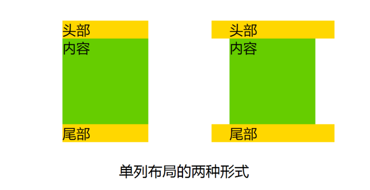
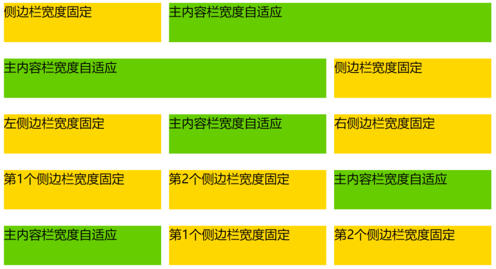
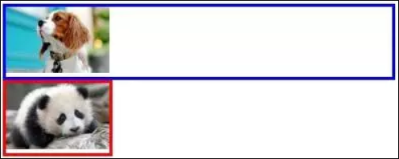
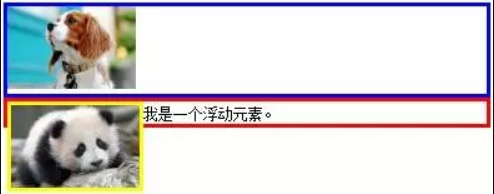

使用CSS对网页布局进行设计是前端工程师的重要工作。下面即介绍各种CSS网页布局的方法，以及相应的技术。
居中方法
居中在布局中很常见，假设DOM文档结构如下，子元素要在父元素中居中：
1 | <div class="parent"> |
水平居中
子元素为行内元素还是块状元素，宽度一定还是宽度未定，采取的布局方案不同。以下即根据子元素的类型给出对应水平居中方法：
- 行内元素：对父元素设置text-align:center;
- 定宽块状元素: 设置左右margin值为auto;
- 不定宽块状元素: 设置子元素为display:inline,然后在父元素上设置text-align:center;
- 通用方案: flex布局，对父元素设置display:flex;justify-content:center;
垂直居中
垂直居中对于子元素是单行内联文本、多行内联文本以及块状元素采用的方案是不同的。具体方法如下：
- 父元素一定，子元素为单行内联文本：设置父元素的height等于行高line-height
- 父元素一定，子元素为多行内联文本：设置父元素的display:table-cell或inline-block，再设置vertical-align:middle;
- 块状元素:设置子元素position:absolute 并设置top、bottom为0，父元素要设置定位为static以外的值，margin:auto;
单列布局
单列布局如图1所示，可分成两种类型，有定宽、水平居中的特点。
- 一种是header、content、footer宽度都相同，其一般不会占满浏览器的最宽宽度，但当浏览器宽度缩小低于其最大宽度时，宽度会自适应。
- 一种是header、footer宽度为浏览器宽度，但content以及header和footer里的内容却不会占满浏览器宽度。

对于第一种，对header、content、footer统一设置width或max-width，并通过margin:auto实现居中。
1 | <div class="layout"> |
1 | .layout{ |
对于第二种，header、footer的内容宽度为100%，但header、footer的内容区以及content统一设置width 或 max-width，并通过margin:auto实现居中。
1 | <div id="header"> |
1 | .layout{ |
二列&三列布局
二列布局的特征是侧栏固定宽度，主栏自适应宽度。三列布局的特征是两侧两列固定宽度，中间列自适应宽度。 之所以将二列布局和三列布局写在一起，是因为二列布局可以看做去掉一个侧栏的三列布局，其布局的思想有异曲同工之妙。
对于传统的实现方法，主要讨论上图2中前三种布局，经典的带有侧栏的二栏布局以及带有左右侧栏的三栏布局。使用flex技术，可实现图2的五种布局。

实现二列&三列布局的CSS技术主要有：
float+margin
原理说明：设置两个侧栏分别向左向右浮动，中间列通过外边距给两个侧栏腾出空间，中间列的宽度根据浏览器窗口自适应。
1 | <div id="content"> |
1 | .sub{ |
注意：
- DOM文档的书写顺序，先写两侧栏，再写主面板，更换后则侧栏会被挤到下一列（圣杯布局和双飞翼布局都会用到）。
- 这种布局方式比较简单明了，但缺点是渲染时先渲染了侧边栏，而不是比较重要的主面板。
position+margin
原理说明：通过绝对定位将两个侧栏固定，同样通过外边距给两个侧栏腾出空间，中间列自适应。
1 | <div class="sub">left</div> |
1 | .sub, .extra { |
注意：
- 本方法不限制DOM书写顺序，先写主面板会使主面板部分优先渲染（一般主面板会比侧栏内容重要）。
- 与上一种方法相比，本种方法是通过定位来实现侧栏的位置固定。
- 如果中间栏含有最小宽度限制，或是含有宽度的内部元素，则浏览器窗口小到一定程度，主面板与侧栏会发生重叠。
圣杯布局(float + 负margin)
原理说明：
主面板设置宽度为100%，主面板与两个侧栏都设置浮动，常见为左浮动，这时两个侧栏会被主面板挤下去。通过负边距将浮动的侧栏拉上来，左侧栏的负边距为100%，刚好是窗口的宽度，因此会从主面板下面的左边跑到与主面板对齐的左边，右侧栏此时浮动在主面板下面的左边，设置负边距为负的自身宽度刚好浮动到主面板对齐的右边。为了避免侧栏遮挡主面板内容，在外层设置左右padding值为左右侧栏的宽度，给侧栏腾出空间，此时主面板的宽度减小。由于侧栏的负margin都是相对主面板的，两个侧栏并不会像我们理想中的停靠在左右两边，而是跟着缩小的主面板一起向中间靠拢。此时使用相对布局，调整两个侧栏到相应的位置。
双飞翼布局(float + 负margin )
原理说明：
双飞翼布局和圣杯布局的思想有些相似，都利用了浮动和负边距，但双飞翼布局在圣杯布局上做了改进，在main元素上加了一层div, 并设置margin,由于两侧栏的负边距都是相对于main-wrap而言，main的margin值变化便不会影响两个侧栏，因此省掉了对两侧栏设置相对布局的步骤。
flex布局
与之前所讲的几种传统布局方案相比，flex布局的代码可谓异常简洁，而且非常通用，利用简单的三行CSS即实现了常见的五种布局。
1 | <div class="layout"> |
1 | .layout { |
自适应与响应式布局
自适应是为了解决如何才能在不同大小的设备上呈现同样的网页，实现一次设计，普遍适用而提出的技术，以避免维护多个版本的针对不同分辨率设备的网页。
但自适应存在一个问题，如果屏幕太小，即使网页能够根据屏幕大小进行适配，但是会感觉在小屏幕上查看，内容过于拥挤。响应式正是为了解决这个问题而衍生出来的概念。它可以自动识别屏幕宽度、并做出相应调整的网页设计，布局和展示的内容可能会有所变动。
目前网页的响应式布局解决方案成为当前主流，并因 twitter 开源的 bootstrap 而被大家熟知。响应式布局的实现原理如下：
- 允许网页宽度自动调整
网页代码的头部，加入一行viewport元标签。
1 | <meta name="viewport" content="width=device-width, initial-scale=1" /> |
viewport是网页默认的宽度和高度，上面这行代码的意思是，网页宽度默认等于屏幕宽度（width=device-width），原始缩放比例（initial-scale=1）为1.0，即网页初始大小占屏幕面积的100%。
- 尽量少使用绝对宽度
由于网页会根据屏幕宽度调整布局，所以不能使用绝对宽度的布局，也不能使用具有绝对宽度的元素。这一条非常重要。具体说，CSS代码不能指定像素宽度：
1 | width:xxx px; |
通过指定百分比宽度来替代：同时还可以配合css的cal，进行计算宽度。1
2width: xx%;
width:auto;
- 相对大小的字体
字体也不能使用绝对大小（px），而只能使用相对大小（em）或者高清方案（rem）,rem不局限于字体大小，前面的宽度width也可以使用，代替百分比。
1 | body { |
上面的代码指定，字体大小是页面默认大小的100%，即16像素。
1 | h1 { |
然后，h1的大小是默认大小的1.5倍，即24像素（24/16=1.5）。
- 流动布局（fluid grid）
“流动布局”的含义是，各个区块的位置都是浮动的，不是固定不变的。
1 | .main { |
float的好处是，如果宽度太小，放不下两个元素，后面的元素会自动滚动到前面元素的下方，不会在水平方向overflow（溢出），避免了水平滚动条的出现。
- 选择加载CSS
“自适应网页设计”的核心，就是CSS3引入的Media Query模块。
它的意思就是，自动探测屏幕宽度，然后加载相应的CSS文件。
1 | <link rel="stylesheet" type="text/css" |
除了用html标签加载CSS文件，还可以在现有CSS文件中加载。
1 | @import url("tinyScreen.css") screen and (max-device-width: 400px); |
- CSS的@media规则
同一个CSS文件中，也可以根据不同的屏幕分辨率，选择应用不同的CSS规则。
1 | @media screen and (max-device-width: 400px) { |
- 图片的自适应（fluid image）
除了布局和文本，”自适应网页设计”还必须实现图片的自动缩放。这只要一行CSS代码：
1 | img { max-width: 100%;} |
布局相关CSS
display
display CSS 属性指定了元素的显示类型，它包含两类基础特征，用于指定元素怎样生成盒模型——外部显示类型定义了元素怎样参与流式布局的处理，内部显示类型定义了元素内子元素的布局方式。
1 | /* <display-outside> values */ |
position
CSS position属性用于指定一个元素在文档中的定位方式。top，right，bottom 和 left 属性则决定了该元素的最终位置。position 属性被指定为从下面的值列表中选择的单个关键字：
- static
该关键字指定元素使用正常的布局行为，即元素在文档常规流中当前的布局位置。此时 top, right, bottom, left 和 z-index 属性无效。
- relative
该关键字下，元素先放置在未添加定位时的位置，再在不改变页面布局的前提下调整元素位置（因此会在此元素未添加定位时所在位置留下空白）。position:relative 对 table-*-group, table-row, table-column, table-cell, table-caption 元素无效。
- absolute
不为元素预留空间，通过指定元素相对于最近的非 static 定位祖先元素的偏移，来确定元素位置。绝对定位的元素可以设置外边距（margins），且不会与其他边距合并。
- fixed
不为元素预留空间，而是通过指定元素相对于屏幕视口（viewport）的位置来指定元素位置。元素的位置在屏幕滚动时不会改变。打印时，元素会出现在的每页的固定位置。fixed 属性会创建新的层叠上下文。当元素祖先的 transform 属性非 none 时，容器由视口改为该祖先。
- sticky
盒位置根据正常流计算(这称为正常流动中的位置)，然后相对于该元素在流中的 flow root（BFC）和 containing block（最近的块级祖先元素）定位。在所有情况下（即便被定位元素为 table 时），该元素定位均不对后续元素造成影响。当元素 B 被粘性定位时，后续元素的位置仍按照 B 未定位时的位置来确定。position: sticky 对 table 元素的效果与 position: relative 相同。
float
float CSS属性指定一个元素应沿其容器的左侧或右侧放置，允许文本和内联元素环绕它。该元素从网页的正常流动(文档流)中移除，尽管仍然保持部分的流动性（与绝对定位相反）。float 属性的值被指定为单一的关键字，值从下面的值列表中选择:
- left
表明元素必须浮动在其所在的块容器左侧的关键字。
- right
表明元素必须浮动在其所在的块容器右侧的关键字。
- none
表明元素不进行浮动的关键字。
- inline-start
关键字，表明元素必须浮动在其所在块容器的开始一侧，在ltr脚本中是左侧，在rtl脚本中是右侧。
- inline-end
关键字，表明元素必须浮动在其所在块容器的结束一侧，在ltr脚本中是右侧，在rtl脚本中是左侧。
float属性具有包裹性和高度欺骗两个特性。
包裹性
block元素不指定width的话，默认是100%，一旦让该div浮动起来，立刻会像inline元素一样产生包裹性，宽度会跟随内容自适应。（这也是通常float元素需要手动指定width的原因）。

效果非常近似于display:inline-block。但相比之下，浮动能设定为左浮和右浮，但display:inline-block都是从左到右排列的。（还有些细微差别，两个display:inline-block间会有空隙，但两个float间没有。）
高度欺骗性

外层div在没有手动设定height的前提下，其高度是由内部content的最大高度决定的，由于img的float使得img具有高度塌陷的欺骗性，让div误以为img的line-height为0，因此div的高度就是文字的匿名inline-box的inline-height。
闭合浮动
闭合浮动的实现方法很多，最合理的方法是用:after伪元素，思路是用:after元素在div后面插入一个隐藏文本”.”，隐藏文本用clear来实现闭合浮动。
1 | .clearfix:after { |
1 | <div style="border:4px solid blue;" class="clearfix"> |
参考链接
- CSS布局十八般武艺都在这里了,by Shelley Lee.
- Flex 布局教程：语法篇,by 阮一峰.
- Flex 布局教程：实例篇,by 阮一峰.
- Flexbox 布局的最简单表单,by 阮一峰.
- 自适应网页设计（Responsive Web Design）,by 阮一峰.
- CSS Grid 网格布局教程,by 阮一峰.
- 响应式和自适应的区别,by LorinLuo.
- display,by mozilla.
- position,by mozilla.
- CSS浮动float详解,by 张歆琳.
- float,by mozilla.
- Scrolling a flexbox with overflowing content,by stackoverflow.
- How to Fix Overflow Issues in CSS Flex Layouts,by moduscreate.